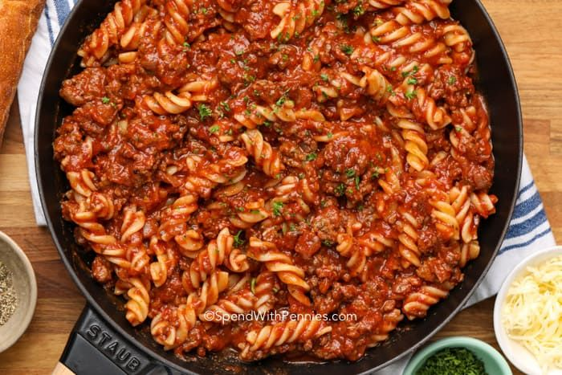

Ground Turkey with Gluten Free Pasta

Ground turkey is cooked on the stovetop and then combined with a gluten free fusilli pasta to create a wonderful dish.
The dish uses a simple combination of a prepurchased seasoning at Trader Joe's which is also where the gluten free fusilli is available.
When the water reaches a boil, the ground turkey is cooked on the stovetop. When the ground turkey is brown, the temperature drops and 3/4 of the sauce is added to simmer while the pasta is finished. When the pasta is finished, it is strained and receives the 1/4 of the sauce remaining. The pasta and the ground turkey is combined in a large dish ready to be served!
Ingredients
- 1lb Ground Turkey
- 1lb Quinoa Fisselli Pasta
- 12oz Roasted Garlic Tomato Sauce
- 4tbsp Soffritos Seasoning
- 1tsp Salt
Steps
- Add water and salt to pot on high heat
- Bring water to a boil, add pasta and cook for 10 minutes
- Heat frying pan on medium heat for 1:30
- Add oil to frying pan
- Season ground turkey
- Add ground turkey to frying pan
- When ground turkey has consistent browning, lower heat to low and add 3/4 tomato sauce
- When pasta has finished cooking, turn off heat, strain, and add back into pot with remaining 1/4 tomato sauce
- Turn off ground turkey heat
- Add pasta to large serving bowl/dish
- Add ground turkey to large serving bowl/dish
- Mix pasta and gorund turkey in bowl
- Serve
Home